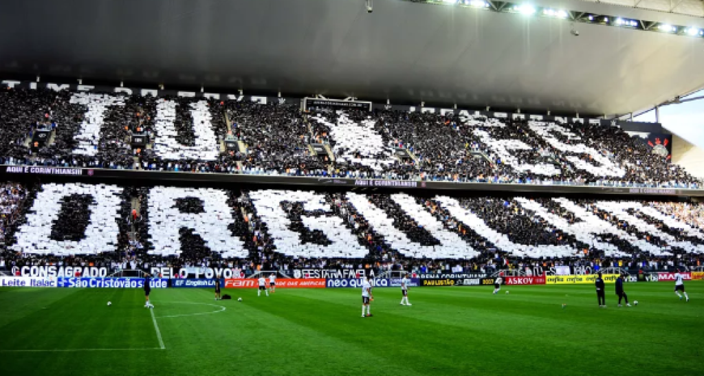

Corinthians conquista o campeonato brasileiro de futebol em uma final emocionante
Em uma final eletrizante realizada ontem no Estádio Nacional, em Brasília, o Corinthians sagrou-se campeão do Campeonato Brasileiro de Futebol, em uma partida que ficará marcada na memória dos torcedores. O time alvinegro venceu o Flamengo por 3 a 2, em um duelo repleto de reviravoltas e lances emocionantes.
Desde o apito inicial, as duas equipes mostraram sua determinação em campo. O Flamengo, atual campeão, começou pressionando e logo abriu o placar com um gol de seu artilheiro, que aproveitou um cruzamento preciso aos 15 minutos do primeiro tempo. No entanto, o Corinthians não se deixou abater e mostrou sua força de reação.
Aos 30 minutos, o atacante corintiano igualou o placar em uma jogada ensaiada de escanteio, cabeceando para o fundo das redes. A partida continuou acirrada, com ambas as equipes buscando a vitória. O Flamengo voltou à frente no marcador aos 55 minutos, após uma bela jogada individual de seu meio-campista, que finalizou com precisão.
No entanto, o Corinthians mostrou sua garra e empatou novamente o jogo aos 75 minutos, com um gol de falta magistral cobrado pelo seu capitão. A torcida alvinegra estava extasiada, e o clima de tensão tomava conta do estádio. O jogo caminhava para a prorrogação, mas o Corinthians ainda reservava uma última emoção para seus torcedores.
Nos acréscimos do segundo tempo, aos 90+4 minutos, o atacante corintiano recebeu um lançamento perfeito, driblou dois zagueiros e finalizou com maestria, selando a vitória do Corinthians e garantindo o título nacional para a equipe paulista. A festa tomou conta das arquibancadas, com os torcedores do Timão comemorando o tão esperado título.
Com essa vitória, o Corinthians conquista seu sétimo título brasileiro e consolida-se como uma das maiores potências do futebol nacional. O técnico do time alvinegro elogiou a determinação e a entrega dos jogadores, destacando a importância da união do grupo para superar as adversidades ao longo da competição.
Após a partida, o presidente do Corinthians agradeceu a todos os envolvidos no sucesso da equipe, desde os jogadores e comissão técnica até a torcida fiel, que apoiou incondicionalmente o time durante toda a temporada. A festa continuará nas ruas de São Paulo, com uma grande carreata planejada para celebrar o título e homenagear os heróis corintianos.
O Campeonato Brasileiro de Futebol de 2023 ficará marcado como uma competição emocionante e disputada, reafirmando a paixão do povo brasileiro pelo esporte mais popular do país. Agora, os olhos se voltam para as competições internacionais, onde o Corinthians buscará representar o Brasil e conquistar novos títulos.